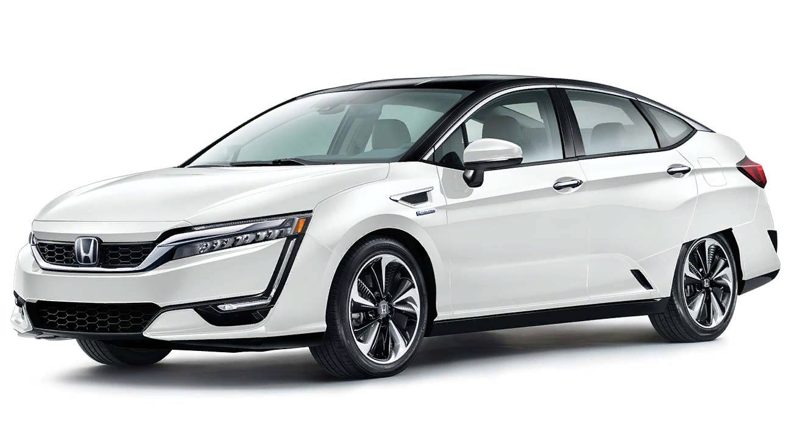

|
Автомобили на топливных элементах, использующие водород в качестве топлива,
могут достичь более высокой средней эффективности полного топливного цикла (от колеса к колесу),
чем двигатель внутреннего сгорания, который использует биотопливо, такое как биодизель.
Действительно, самое большое преимущество водородного транспортного средства заключается в том,
что оно производит только воду и воздух, которые не приносят вред окружающей среде. Но хотя и
является правдой, что водородное топливо не оставляет выбросов, также верно и то, что оно не
производится естественным путем на Земле. Производство водорода предполагает такие процессы,
как электролиз, для которого необходимо электричество. И эта энергия поступает из ископаемого топлива.
|
|
Производство водородных автомобилей является достаточно сложным, и многие производители и потребители будут сталкиваться
с многочисленными проблемами, прежде чем такие автомобили будут производиться массово. Как поясняет г-н Ясуджи Шибата
(Mr Yasuji Shibata), генеральный директор департамента оценки электрических транспортных средств корпорации, «первая цель
Toyota Motor Corporation заключается в том, чтобы разработать электрические двигатели с тем же уровнем производительности
и надежности, что и обычные автомобили, в рамках обоснованного бюджета». С этим связано требование гарантии эксплуатации
характеристик автомобиля, отвечающего потребностям клиента, в особенности потребности в экономии топлива.
|

|